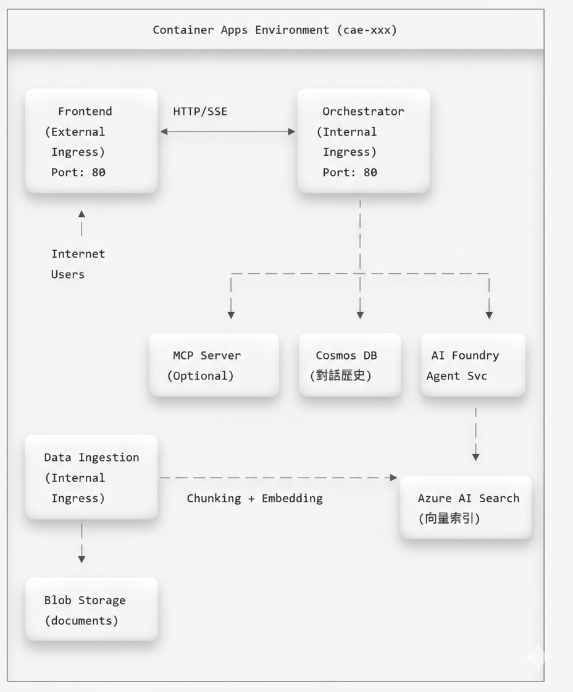

專案名稱: GPT-RAG Sensengo (林口恩典大樓企業資訊 Agent)
客戶: 東森集團企業 (sensengo.com.tw)
建立日期: 2026年2月6日
版本: 1.0
東森集團正在興建「林口恩典大樓」(Grace Tower)，包含辦公室、酒店、餐廳、商場、教堂、展演空間等設施。此專案需要一個企業級 RAG (Retrieval-Augmented Generation) 系統，協助內部員工查詢專案相關資訊並進行商業規劃。
| 目標 | 說明 |
|---|---|
| 正確性與創造性平衡 | Agent 需能精確回答資料，同時具備創意發想能力 |
| 多模態支援 | 處理 Word、PowerPoint、Excel、圖片等多種檔案格式 |
| 檔案管理 | 支援上傳、刪除、版本控管 |
| 跨裝置存取 | 支援桌面、手機、平板等多種裝置 |
重要提醒：本 GPT-RAG 解決方案加速器無法保證 100% 的回答準確性。主要影響因素包括：
- LLM 模型本身的限制 — 即便是最先進的 GPT 模型，仍可能產生「幻覺」(Hallucination)，即生成看似合理但實際上不正確的內容。這是目前大型語言模型的固有特性，無法完全消除。
- 知識庫資料的數量與品質 — AI Search 引擎的回答品質直接取決於已匯入的文件資料。若資料不完整、過時或品質不佳，將導致檢索結果不精確，進而影響最終回答的正確性。
因此，建議使用者將系統回答作為參考輔助，對於關鍵決策仍應進行人工驗證。
本專案採用 Microsoft GPT-RAG 解決方案加速器，基於以下技術：
| 層級 | 技術 |
|---|---|
| AI 框架 | Azure AI Foundry Agent Service (azure-ai-agents>=1.2.0b4) |
| LLM 模型 | GPT-5.2 (GlobalStandard) |
| 向量搜尋 | Azure AI Search (azure-search-documents 11.5~11.7) |
| Embedding | text-embedding-3-large |
| 後端框架 | FastAPI 0.115+ / Uvicorn 0.34+ / Python 3.12 |
| 前端框架 | Chainlit 2.6.0 |
| AI 擴展 | Semantic Kernel 1.34+ (含 MCP 支援) |
| 容器運行 | Azure Container Apps (Consumption) |
| IaC 工具 | Bicep + Azure Developer CLI (azd 1.22+) |

| 資源類型 | 命名規則 | SKU/層級 | 用途 |
|---|---|---|---|
| AI Foundry | aif-{token}-GPRAG |
Standard | AI 模型管理平台 |
| Azure OpenAI | (AI Foundry 內建) | GlobalStandard | LLM 推理 |
| Azure AI Search | srch-{token}-GPRAG |
Basic | 向量與混合搜尋 |
| Cosmos DB | cosmos-{token}-GPRAG |
Serverless | 對話歷史儲存 |
| Container Apps | ca-{token}-*-GPRAG |
Consumption | 微服務運行 |
| Container Apps Env | cae-{token}-GPRAG |
- | 共用環境 |
| Container Registry | cr{token}GPRAG |
Standard | Docker 映像 |
| Storage Account | st{token}GPRAG |
Standard LRS | 文檔儲存 |
| App Configuration | appcs-{token}-GPRAG |
Standard | 集中配置 |
| Key Vault | kv-{token}-GPRAG |
Standard | 密鑰管理 |
| Log Analytics | log-{token}-GPRAG |
Pay-as-you-go | 日誌收集 |
| Application Insights | appi-{token}-GPRAG |
Pay-as-you-go | 應用監控 |
Token 說明:
{token}是由 azd 自動產生的唯一識別碼，例如2v3lfktkn4xam
| 服務 | Container App 名稱 | 功能 | Ingress |
|---|---|---|---|
| Frontend | ca-{token}-frontend-GPRAG |
Chainlit 聊天介面 | External |
| Orchestrator | ca-{token}-orch-GPRAG |
RAG 核心引擎 | Internal |
| DataIngest | ca-ingest-GPRAG |
文件處理與索引 | Internal |
| MCP | ca-{token}-mcp-GPRAG |
工具擴充 (選用) | Internal |
| 模型 | 部署名稱 | SKU | 容量 (TPM) | 用途 |
|---|---|---|---|---|
| GPT-5.2 | chat |
GlobalStandard | 80K | 對話生成 |
| text-embedding-3-large | text-embedding |
Standard | 40K | 向量嵌入 |
1. 使用者在 Chainlit 介面輸入問題
↓
2. Frontend 發送 HTTP POST 到 Orchestrator (SSE 串流)
↓
3. Orchestrator 從 Cosmos DB 載入對話歷史
↓
4. Orchestrator 呼叫 Azure AI Foundry Agent Service
↓
5. Agent 決定呼叫 search_knowledge_base 工具
↓
6. AI Search 執行向量相似度搜尋，返回相關文件片段
↓
7. LLM (GPT-5.2) 根據檢索結果生成回應
↓
8. 回應透過 SSE 串流傳回 Frontend
↓
9. 對話儲存到 Cosmos DBAPI Flow:
┌─────────────┐ POST /orchestrator (SSE) ┌───────────────┐
│ Frontend │ ──────────────────────────────────► │ Orchestrator │
│ (Chainlit) │ ◄────────────────────────────────── │ (FastAPI) │
└─────────────┘ SSE Stream (text/event-stream) └───────────────┘
│
┌──────────────────────────────────────┼──────────────────┐
│ │ │
▼ ▼ ▼
┌────────────┐ ┌──────────────┐ ┌─────────────┐
│ Cosmos DB │ │ AI Foundry │ │ AI Search │
│ (History) │ │ Agent Service│ │ (RAG) │
└────────────┘ └──────────────┘ └─────────────┘查詢處理 Function 呼叫鏈:
以下描述每個 Function 被誰呼叫、輸入什麼、內部再呼叫誰、輸出什麼：
① app.handle_message() —
使用者訊息進入點
| 項目 | 說明 |
|---|---|
| 檔案 | gpt-rag-ui/app.py (Chainlit @cl.on_message
handler) |
| 呼叫者 | Chainlit 框架 (使用者在聊天介面送出訊息時自動觸發) |
| 輸入 | cl.Message 物件，包含 message.content
(使用者問題)、message.id |
| 內部處理 | 1. 取得
conversation_id、auth_info、debug_mode、search_index
等 session 參數2. 呼叫 ② call_orchestrator_stream() |
| 輸出 | SSE 串流回應，逐 chunk 透過 response_msg.stream_token()
顯示在 Chainlit UI |
② call_orchestrator_stream() — Frontend
→ Orchestrator HTTP Client
| 項目 | 說明 |
|---|---|
| 檔案 | gpt-rag-ui/orchestrator_client.py |
| 呼叫者 | app.handle_message() |
| 輸入 | conversation_id, question (str),
auth_info (dict), question_id,
debug_mode, search_index |
| 內部處理 | 1. 讀取 ORCHESTRATOR_BASE_URL 或組合 Dapr sidecar
URL2. 組裝 HTTP headers ( X-API-KEY /
dapr-api-token)3. 組裝 JSON payload: {ask, question, conversation_id, client_principal_id, client_principal_name, debug_mode, search_index, ...}4. 使用 httpx.AsyncClient.stream("POST", url, json=payload)
發送請求5. 呼叫 ③ POST /orchestrator |
| 輸出 | AsyncIterator[str] — SSE 文字串流 (每個 chunk yield
回給呼叫者) |
③ orchestrator_endpoint() — FastAPI
Endpoint
| 項目 | 說明 |
|---|---|
| 檔案 | gpt-rag-orchestrator/src/main.py |
| 呼叫者 | call_orchestrator_stream() 透過 HTTP POST |
| 輸入 | OrchestratorRequest (Pydantic model，定義在
schemas.py)：- ask (str, 必填) —
使用者問題- conversation_id (str, 選填) — 對話 ID- debug_mode (bool, 選填) — 啟用 debug- search_index (str, 選填) — 指定 AI Search 索引- type (str, 選填) — "feedback"
則走回饋路徑- question_id,
client_principal_id, client_principal_name,
client_group_names, access_token,
user_context 等 |
| 內部處理 | 1. 驗證認證 (validate_auth dependency, 檢查
X-API-KEY 或 dapr-api-token)2. 若 type == "feedback" → 呼叫
orchestrator.save_feedback() 後直接回傳3. 否則呼叫 ④ Orchestrator.create() 建立實例4. 呼叫 ⑤ orchestrator.stream_response(ask)
取得回應串流5. 包裝為 StreamingResponse(media_type="text/event-stream") |
| 輸出 | StreamingResponse — SSE 串流，包含
conversation_id + 回應文字 + debug events |
④ Orchestrator.create() — 建立
Orchestrator 實例
| 項目 | 說明 |
|---|---|
| 檔案 | gpt-rag-orchestrator/src/orchestration/orchestrator.py |
| 呼叫者 | orchestrator_endpoint() |
| 輸入 | conversation_id, user_context (dict),
debug_mode (bool), search_index (str) |
| 內部處理 | 1. 初始化 CosmosDBClient (對話歷史存取)2. 從 App Configuration 讀取 AGENT_STRATEGY (預設
"single_agent_rag")3. 呼叫 AgentStrategyFactory.get_strategy(name) → 得到 Strategy
實例4. 將 debug_mode、search_index 設定到
Strategy 上 |
| 輸出 | Orchestrator 實例 (含已初始化的
agentic_strategy) |
AgentStrategyFactory.get_strategy()
對照表 (定義在 strategies/agent_strategy_factory.py)：
| Key | 對應 Class | 檔案 |
|---|---|---|
single_agent_rag |
SingleAgentRAGStrategyV1 |
strategies/single_agent_rag_strategy_v1.py |
mcp |
McpStrategy |
strategies/mcp_strategy.py |
nl2sql |
NL2SQLStrategy |
strategies/nl2sql_strategy.py |
⑤ Orchestrator.stream_response(ask) —
核心協調流程
| 項目 | 說明 |
|---|---|
| 檔案 | gpt-rag-orchestrator/src/orchestration/orchestrator.py |
| 呼叫者 | orchestrator_endpoint() (在 SSE generator 中) |
| 輸入 | ask (str 使用者問題), question_id (str,
選填) |
| 內部處理 | 1. 從 Cosmos DB 載入或建立 conversation document 2. 記錄 question_id 到 conversation 3. 將 conversation 傳給 strategy 4. 呼叫 ⑥ strategy.initiate_agent_flow(ask)
取得回應串流5. 完成後更新 conversation document 至 Cosmos DB |
| 輸出 | AsyncIterator[str] — 先 yield
{conversation_id}，再 yield 所有 strategy 回應 chunk |
⑥
SingleAgentRAGStrategyV1.initiate_agent_flow(ask)
— Agent 執行流程
| 項目 | 說明 |
|---|---|
| 檔案 | gpt-rag-orchestrator/src/strategies/single_agent_rag_strategy_v1.py |
| 呼叫者 | Orchestrator.stream_response() |
| 輸入 | user_message (str 使用者問題) |
| 內部處理 (依序) | Step 1: _get_or_create_thread() —
建立或取回 AI Foundry Agent ThreadStep 2: _get_or_create_agent() — 建立 Agent (含 system prompt,
tools 定義)Step 3: _send_user_message() — 將 user_message 送入
ThreadStep 4: _stream_agent_response()
→ 呼叫 ⑦ Agent Run StreamStep 5: _consolidate_conversation_history() — 從 Thread
取回完整對話歷史Step 6: _cleanup_agent() — 刪除暫時 Agent |
| 內部 Tools | Agent 初始化時註冊的 FunctionTools： - ⑧ SearchClient.search_knowledge_base(query) — RAG
知識庫搜尋- ⑨ CallTranscriptClient.query_call_transcripts(...) —
通話記錄查詢 (若啟用)- BingGroundingTool — Bing 搜尋
(若啟用) |
| 輸出 | AsyncIterator[str] — Agent 回應文字 chunk + debug
events (若 debug mode) |
⑦ _stream_agent_response() — Agent Run
串流
| 項目 | 說明 |
|---|---|
| 檔案 | gpt-rag-orchestrator/src/strategies/single_agent_rag_strategy_v1.py |
| 呼叫者 | initiate_agent_flow() Step 4 |
| 輸入 | project_client, agent_id,
thread_id, user_message |
| 內部處理 | 1. 呼叫
project_client.agents.runs.stream(thread_id, agent_id) 啟動
Agent Run2. LLM 第一次思考 → 決定需要呼叫哪些 Tools 3. Auto-execute registered Tools (⑧ 或 ⑨) — SDK 自動執行 4. LLM 第二次思考 → 基於 Tool 結果生成最終回應 5. 處理 thread.message.delta 事件，逐 chunk yield
回應文字 |
| 輸出 | AsyncIterator[str] — 回應文字 chunk (含引用處理) |
⑧
SearchClient.search_knowledge_base(query) — RAG
知識庫搜尋
| 項目 | 說明 |
|---|---|
| 檔案 | gpt-rag-orchestrator/src/connectors/search.py |
| 呼叫者 | AI Foundry Agent SDK auto-execute (當 Agent 決定需要搜尋知識庫時) |
| 輸入 | query (str) — Agent 產生的搜尋查詢 |
| 內部處理 | 1. 依 search_approach (hybrid/vector/term) 組裝搜尋
body2. 若 vector/hybrid → 呼叫 Azure OpenAI get_embeddings(query) 產生向量3. 呼叫 Azure AI Search REST API 執行搜尋 4. 解析結果取 title,
content, url, filepath |
| 輸出 | JSON string — [{title, link, content}, ...]
搜尋結果列表 |
⑨
CallTranscriptClient.query_call_transcripts(...) —
通話記錄查詢
| 項目 | 說明 |
|---|---|
| 檔案 | gpt-rag-orchestrator/src/connectors/call_transcripts.py |
| 呼叫者 | AI Foundry Agent SDK auto-execute (當 Agent 決定需要查詢通話記錄時) |
| 輸入 | customer_id (str, 選填), status (str,
選填: “成功”/“失敗”), call_date (str, 選填: “YYYY-MM-DD”),
keyword (str, 選填), top (int, 預設 10),
include_full_transcript (str, 預設 “false”) |
| 內部處理 | 1. 動態組裝 Cosmos DB SQL 查詢 (WHERE 條件) 2. 透過 CosmosClient 查詢 call-transcripts
container3. 格式化結果 (截斷 transcript 至前 300 字元，除非 include_full_transcript=true) |
| 輸出 | JSON string — 包含符合條件的通話記錄列表 |
1. 使用者上傳文件到 Blob Storage (documents container)
↓
2. Ingestion Service 依 CRON 排程觸發
↓
3. 讀取文件並依類型選擇 Chunker
├── PDF/DOCX/PPTX → Document Intelligence
├── XLSX → SpreadsheetChunker
└── 其他 → LangChain Chunker
↓
4. 文件切分成 Chunks (預設 2048 tokens)
↓
5. Azure OpenAI 生成向量嵌入 (text-embedding-3-large)
↓
6. Chunks + Vectors 上傳到 Azure AI Search
↓
7. 寫入 Job 執行記錄API Flow:
┌─────────────┐ Upload file ┌──────────────┐
│ User │ ────────────────────► │ Blob Storage │
└─────────────┘ │ (documents) │
└──────────────┘
│
│ CRON Trigger
▼
┌─────────────────────────────────────────────────────────────────┐
│ Ingestion Service │
│ ┌───────────────┐ ┌─────────────┐ ┌──────────────────┐ │
│ │ Read Document │ ─► │ Chunker │ ─► │ Generate Embedding│ │
│ │ (Blob Client) │ │ (Factory) │ │ (Azure OpenAI) │ │
│ └───────────────┘ └─────────────┘ └──────────────────┘ │
└─────────────────────────────────────────────────────────────────┘
│
│ Upload Index
▼
┌──────────────┐
│ AI Search │
│ (Index) │
└──────────────┘Ingestion Function 呼叫鏈 (CRON 排程路徑):
以下描述 Blob 索引排程 (最主要路徑) 中每個 Function 的呼叫關係：
❶ lifespan() → Scheduler 啟動 —
應用程式啟動入口
| 項目 | 說明 |
|---|---|
| 檔案 | gpt-rag-ingestion/main.py |
| 呼叫者 | FastAPI 框架 (應用程式啟動時自動執行) |
| 輸入 | 無 (讀取 App Configuration 中的 CRON 設定) |
| 內部處理 | 1. 驗證 Azure 認證 (Managed Identity / Service Principal / az
login) 2. 初始化 App Configuration Client 3. 讀取各 CRON_RUN_* 設定，透過 APScheduler CronTrigger
註冊排程4. 啟動時立即執行一次已排程的 Jobs (如 ❷ run_blob_index()) |
| 輸出 | 無 (排程在背景持續運行) |
排程 Job 對應表：
| CRON Key | 呼叫 Function | 對應 Class |
|---|---|---|
CRON_RUN_BLOB_INDEX |
run_blob_index() |
BlobStorageDocumentIndexer |
CRON_RUN_BLOB_PURGE |
run_blob_purge() |
BlobStorageDeletedItemsCleaner |
CRON_RUN_SHAREPOINT_INDEX |
run_sharepoint_index() |
SharePointIndexer |
CRON_RUN_NL2SQL_INDEX |
run_nl2sql_index() |
NL2SQLIndexer |
❷ run_blob_index() — Blob
索引排程觸發點
| 項目 | 說明 |
|---|---|
| 檔案 | gpt-rag-ingestion/main.py |
| 呼叫者 | APScheduler CRON 觸發 或 lifespan 啟動時立即呼叫 |
| 輸入 | 無 |
| 內部處理 | 實例化 BlobStorageDocumentIndexer() 並呼叫 ❸
.run() |
| 輸出 | 無 (執行結果記錄在 Blob Storage logs) |
❸ BlobStorageDocumentIndexer.run() —
Blob 索引核心邏輯
| 項目 | 說明 |
|---|---|
| 檔案 | gpt-rag-ingestion/jobs/blob_storage_indexer.py |
| 呼叫者 | run_blob_index() |
| 輸入 | BlobIndexerConfig (從 App Configuration
讀取)：storage_account_name, source_container,
search_endpoint, search_index_name,
max_concurrency 等 |
| 內部處理 | 1. _ensure_clients() — 建立
BlobServiceClient + AsyncSearchClient2. _load_latest_index_state() — 從 AI Search 載入現有文件的
last_modified map3. 列舉 Blob Storage container 中所有文件 4. 比對 blob.last_modified >
prev_last_modified → 篩出需重新索引的文件5. 並行呼叫 ❹ _process_one() 處理每個文件 (受
max_concurrency 限制)6. 寫入 run summary 至 Blob Storage jobs log container |
| 輸出 | Summary dict:
{sourceFiles, candidates, indexedItems, success, failed, totalChunksUploaded} |
❹
_process_one(blob_name, last_modified, content_type)
— 單一文件處理
| 項目 | 說明 |
|---|---|
| 檔案 | gpt-rag-ingestion/jobs/blob_storage_indexer.py |
| 呼叫者 | BlobStorageDocumentIndexer.run() (並行呼叫) |
| 輸入 | blob_name (str), last_modified (datetime),
content_type (str), run_id (str) |
| 內部處理 | 1. 從 Blob Storage 下載文件 bytes
(blob_client.download_blob())2. 讀取 blob metadata 中的 security_ids (文件權限控制)3. 組裝 data = {documentUrl, documentContentType, documentBytes, fileName}4. 呼叫 ❺ DocumentChunker().chunk_documents(data)
進行文件切分5. 將 chunks 轉換為 AI Search documents ( _to_search_doc())6. 呼叫 _replace_parent_docs() — 刪除舊 chunks 後上傳新 chunks 至
AI Search7. 寫入 per-file log |
| 輸出 | {status: "success", chunks: N} 或
{status: "error", error: "..."} |
❺ DocumentChunker.chunk_documents(data)
— 文件切分入口
| 項目 | 說明 |
|---|---|
| 檔案 | gpt-rag-ingestion/chunking/document_chunking.py |
| 呼叫者 | _process_one() 或 /document-chunking HTTP
endpoint |
| 輸入 | data (dict):
{documentUrl, documentContentType, documentBytes, fileName} |
| 內部處理 | 1. 呼叫 ❻
ChunkerFactory().get_chunker(data) 取得對應的
Chunker2. 呼叫 chunker.get_chunks() 執行實際切分 |
| 輸出 | (chunks, errors, warnings) — chunks 為 dict
list，每個含 content, title, url
等 |
❻ ChunkerFactory.get_chunker(data) —
Chunker 工廠
| 項目 | 說明 |
|---|---|
| 檔案 | gpt-rag-ingestion/chunking/chunker_factory.py |
| 呼叫者 | DocumentChunker.chunk_documents() |
| 輸入 | data (dict) — 包含 fileName
用以判斷副檔名 |
| 內部處理 | 依檔案副檔名選擇 Chunker 實例 |
| 輸出 | 對應的 Chunker 實例 |
Chunker 對照表：
| 副檔名 | Chunker Class | 說明 |
|---|---|---|
pdf, png, jpeg,
jpg, bmp, tiff |
DocAnalysisChunker |
透過 Document Intelligence 分析 |
docx, pptx |
DocAnalysisChunker |
需 Doc Intelligence 4.0 API |
xlsx, xls |
SpreadsheetChunker |
試算表切分 |
vtt |
TranscriptionChunker |
字幕/逐字稿 |
json |
JSONChunker |
JSON 資料切分 |
nl2sql |
NL2SQLChunker |
NL2SQL schema 切分 |
其他 (txt, md 等) |
LangChainChunker |
LangChain 通用文字切分 |
若
MULTIMODAL=true，PDF/圖片/DOCX/PPTX 會改用MultimodalChunker。
Ingestion HTTP Endpoints 呼叫鏈 (手動觸發路徑):
除了 CRON 排程，也可透過 HTTP API 手動觸發：
❼ POST /document-chunking —
手動文件切分
| 項目 | 說明 |
|---|---|
| 檔案 | gpt-rag-ingestion/main.py |
| 呼叫者 | Azure AI Search Skillset 或手動 HTTP 呼叫 |
| 認證 | API Key (validate_api_key_header) |
| 輸入 | JSON Body:
{"values": [{"recordId": "1", "data": {"documentUrl": "https://...", "documentContentType": "application/pdf"}}]} |
| 內部處理 | 1. JSON Schema 驗證 2. 透過 BlobClient 下載文件
bytes3. 呼叫 ❺ DocumentChunker().chunk_documents(data)4. 組裝回應 |
| 輸出 | JSON:
{"values": [{"recordId": "1", "data": {"chunks": [...]}, "errors": [], "warnings": []}]} |
❽ POST /text-embedding —
手動向量嵌入
| 項目 | 說明 |
|---|---|
| 檔案 | gpt-rag-ingestion/main.py |
| 呼叫者 | Azure AI Search Skillset 或手動 HTTP 呼叫 |
| 認證 | API Key (validate_api_key_header) |
| 輸入 | JSON Body:
{"values": [{"recordId": "1", "data": {"text": "要嵌入的文字"}}]} |
| 內部處理 | 1. 實例化 AzureOpenAIClient()2. 對每個 item 呼叫 aoai_client.get_embeddings(text) (Azure OpenAI
text-embedding-3-large)3. 組裝回應 |
| 輸出 | JSON:
{"values": [{"recordId": "1", "data": {"embedding": [0.012, -0.034, ...]}, "errors": [], "warnings": []}]} |
| 工具 | 版本 | 安裝指令 |
|---|---|---|
| Azure CLI | 2.80+ | winget install Microsoft.AzureCLI |
| Azure Developer CLI | 1.22+ | winget install Microsoft.Azd |
| Docker | 29+ | Docker Desktop |
| Python | 3.12 | winget install Python.Python.3.12 |
| Git | 最新 | winget install Git.Git |
Microsoft.AppConfigurationMicrosoft.DocumentDBMicrosoft.ContainerServiceMicrosoft.CognitiveServices# 登入指定租戶
az login --tenant {tenant-id}
# 設定訂閱
az account set --subscription "{subscription-name}"
# 驗證權限
az role assignment list --assignee $(az ad signed-in-user show --query id -o tsv) --query "[].roleDefinitionName" -o tablecd GPT-RAG
# 初始化環境
azd init -e {environment-name}
# 設定區域
azd env set AZURE_LOCATION eastus2# 執行 Bicep 部署
azd provision預期結果：約 20-25 個 Azure 資源建立完成
# 部署所有服務
azd deploy如果 azd deploy 失敗，可手動部署：
# 登入 ACR
az acr login --name cr{token}
# 建置並推送 Frontend
cd ../gpt-rag-ui
$ts = Get-Date -Format "yyyyMMddHHmmss"
docker build -t cr{token}.azurecr.io/azure-gpt-rag/frontend:$ts .
docker push cr{token}.azurecr.io/azure-gpt-rag/frontend:$ts
# 更新 Container App
az containerapp update --name ca-{token}-frontend --resource-group GPRAG `
--image cr{token}.azurecr.io/azure-gpt-rag/frontend:$ts# 檢查 Container Apps 狀態
az containerapp list --resource-group GPRAG --query "[].{name:name, state:properties.runningStatus}" -o table
# 檢查 AI Search 索引
$searchEndpoint = "https://srch-{token}.search.windows.net"
$token = az account get-access-token --resource "https://search.azure.com" --query accessToken -o tsv
Invoke-RestMethod -Uri "$searchEndpoint/indexes?api-version=2023-11-01" `
-Headers @{ "Authorization" = "Bearer $token" }Frontend 內建 Debug 面板，可顯示詳細的執行資訊：
啟用方式： - 預設為啟用 - 輸入
/debug off 可關閉 - 輸入 /debug 或
/debug on 重新啟用
顯示內容：
| 面板 | 內容 |
|---|---|
| Timing | 各階段執行時間 (Thread/Agent 管理、LLM 思考、工具執行等) |
| Prompting Details | System Prompt、Tool Calls、Search Results、LLM Calls |
UI 佈局：左右分割 (問答區 55%、Debug Panel 45%)
系統支援三種 Agent 策略：
| 策略 | 設定值 | 說明 |
|---|---|---|
| Single Agent RAG | single_agent_rag |
預設模式，單一 Agent + RAG 工具 |
| MCP | mcp |
Model Context Protocol 擴充工具 |
| NL2SQL | nl2sql |
自然語言轉 SQL 查詢 |
切換方式：在 App Configuration 設定 AGENT_STRATEGY
az appconfig kv set --endpoint "https://appcs-{token}.azconfig.io" `
--key "AGENT_STRATEGY" --value "single_agent_rag" --label "gpt-rag" --auth-mode login -y| Key | 說明 | 預設值 |
|---|---|---|
AGENT_STRATEGY |
Agent 策略 | single_agent_rag |
CHAT_DEPLOYMENT_NAME |
LLM 部署名稱 | chat |
EMBEDDING_DEPLOYMENT_NAME |
Embedding 部署名稱 | embedding |
SEARCH_RAGINDEX_TOP_K |
搜尋結果數量 | 3 |
SEARCH_APPROACH |
搜尋方法 (hybrid/vector/term) | hybrid |
ORCHESTRATOR_URI |
Orchestrator 內部 URL | (自動設定) |
| Key | 說明 | 預設值 |
|---|---|---|
CRON_RUN_BLOB_INDEX |
Blob 索引排程 | 0 */6 * * * |
CRON_RUN_BLOB_PURGE |
Blob 清理排程 | 0 0 * * * |
RUN_JOBS_ON_STARTUP |
啟動時執行 Job | true |
DOCUMENTS_STORAGE_CONTAINER |
文件容器名稱 | documents |
SEARCH_RAG_INDEX_NAME |
搜尋索引名稱 | ragindex-{token} |
| Key | 說明 | 預設值 |
|---|---|---|
CHUNKING_NUM_TOKENS |
一般文件 Chunk 大小 | 2048 |
TOKEN_OVERLAP |
Chunk 重疊 tokens | 100 |
CHUNKING_MIN_CHUNK_SIZE |
最小 Chunk 大小 | 100 |
SPREADSHEET_CHUNKING_NUM_TOKENS |
Excel Chunk 大小 | 0 (無限制) ⚠️ |
SPREADSHEET_CHUNKING_BY_ROW |
按列切分 Excel | false |
⚠️ 注意:
SPREADSHEET_CHUNKING_NUM_TOKENS=0表示不限制大小，可能產生超大 Chunk (如 31,772 字元)。建議設為2048。
| 檔案類型 | Chunker |
|---|---|
.pdf, .docx, .pptx,
.png, .jpg |
DocAnalysisChunker (使用 Document Intelligence) |
.xlsx, .xls |
SpreadsheetChunker |
.json |
JSONChunker |
.vtt |
TranscriptionChunker |
.md, .txt, .html,
.py |
LangChainChunker |
可能原因: 1. Cosmos DB 防火牆阻擋 2. TPM 配額用完 3. Orchestrator 連線失敗
排查步驟:
# 1. 檢查 Cosmos DB 網路設定
az cosmosdb show --name cosmos-{token} --resource-group GPRAG `
--query "publicNetworkAccess"
# 2. 檢查 Orchestrator 日誌
az containerapp logs show --name ca-{token}-orch --resource-group GPRAG --tail 100原因: Storage Account
publicNetworkAccess 設為 Disabled
解決:
az storage account update --name st{token} --resource-group GPRAG `
--public-network-access Enabled症狀: Container 頻繁重啟，Exit Code 137
解決: 增加記憶體配置
az containerapp update --name ca-ingest-gprag --resource-group GPRAG `
--cpu 1.0 --memory 2Gi分析: 這是 Agent 架構的正常現象
| 階段 | 時間 | 說明 |
|---|---|---|
| Cosmos DB | ~4s | 載入對話歷史 |
| Agent 思考 | ~7s | 決定呼叫工具 |
| RAG 檢索 | ~1.5s | 搜尋 + Embedding |
| LLM 生成 | ~27s | 主要瓶頸 |
優化建議: - 使用較小的模型 (如 GPT-4.1 Mini) - 減少
SEARCH_RAGINDEX_TOP_K - 調整 Chunk 大小 — 降低
CHUNK_SIZE (如從 2048 降至 1024 tokens)，使每個 chunk
內容更精簡，減少 LLM 輸入 token 數量，從而加速回應生成 - 簡化 System
Prompt
主要成本來源
| 元件 | 成本驅動因素 |
|---|---|
| LLM（GPT-5.2） | Prompt token + Completion token |
| Embedding | 文件 chunk 數量與大小 |
| AI Search | Index 大小、查詢次數 |
| Cosmos DB | RU/s 使用量 |
高成本操作提醒
SEARCH_RAGINDEX_TOP_K 設定過大配額
文件結束